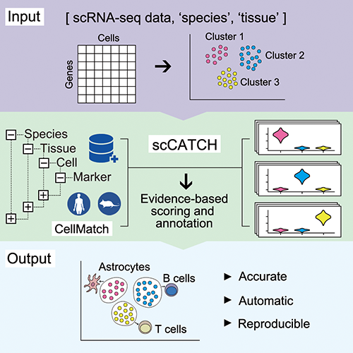
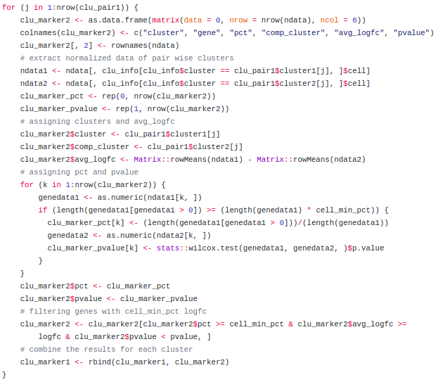
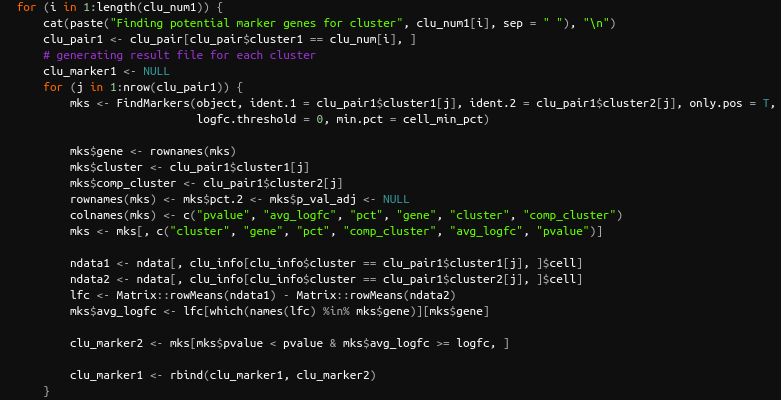

A fast and smart alternative for classifying cell types

This post is about a big question in single-cell analysis: how to classify/identify the cell types of my data? I would like to have an answer, but there is still no consensus. According to the scRNA-tools website, there are 67 cataloged tools for classifying cell types implemented in R, Python, etc. I consider that there are two main types of classifying cell types:
- Using classic known markers, as PECAM1 for Edothelial cells, CD19 for B cells, etc. A website that has a very extensive and complete database is CellMarker, where you can find genes marker based on the literature and experiments. This classification of cell types is based on the high expression of these specific marker genes.
- Using automated methods that infers the cell type. As stated above, you can find a list of these different tools on the scRNA-tools website.
The most common way of doing the classification is by identifying the different clusters and doing differential expression analysis of one group against all the others in order to find the genes that are most differentially expressed in each group. In this post I chose to talk to you about a very interesting tool that combines this principle mentioned above with a database of markers for different tissues and cancers. The tool is called scCATCH and the original article can be found here and with the GitHub page. An overview of the package is show in Figure 1 below.
 Fig. 1: Overview of scCATCH (image taken from the original article.)
The tool is implemented as an R package and includes a panel of 353 cell types and related 686 subtypes associated with 184 tissue types, 20,792 cell-specific marker genes and 2,097 references of human and mouse. More informations about the package can be found in the GitHub and paper mentioned above. “Basically”, the package will find the marker genes for each cluster and associate those genes with the database.
One of the strategies used in this tool that caught my attention was that instead of calculating the markers for a specific cluster comparing against all the others, it calculates the markers of that cluster against each one individually and joining these information at the end. I tried to implement the tool on some data that I am analyzing but I realized that it was taking a long time to run (approximately 5h for a total of 10k cells with 18 clusters). So I decided to take a closer look at the source code and found that piece of code:
 Fig. 2: Step in which the markers for each cluster are calculated.
In summary, this part of the code will calculate the logFC, pvalue using the Wilcox test and the percentage of expression of a specific marker between two clusters. These steps are very time-consuming because are implemented in R, and calculates the Wilcox test for each case. To solve this first I looked for a parallelization parameter in the package, but it is not implemented in the package.
So to continue using scCATCH more efficiently I edited the source code of the part above (Fig. 2) as shown in Fig. 3:
 Fig. 3: Piece of code modified.
The implementation I did is to keep the same calculations, but now using the FindMarkers function of the Seurat package to perform the Wilcox test and get the pvalue, in addition to calculating the percentage of expression of a specific marker between two clusters. The logFC calculation was maintained as proposed in scCATCH package.
The package with these modifications can be downloaded here and installed using de following command:
install.packages("/path/to/package/scCATCH_2.0.tar.gz", repos = NULL)
Why/How will this implementation improve the scCATCH performance?
There is an R package called Future that provides a lightweight and unified Future API for sequential and parallel processing of R expression. The Seurat package has a tutorial that shows you how to perform parallelization in Seurat with future, and one of the functions that are enabled for parallelization using the future package is FindMarkers, exactly the one I used in the implementation above. With Future is possible to plan differents strategies to parallelize the scCATCH package, like sequential, multisession, multicore, multiprocess, clusters, etc. A more detailed explanation of the plan types can be found in the package vignette.
So, one example of the way of using the Future package along with scCATCH is that way:
# Loading packages
library(Seurat)
library(future)
library(scCATCH)
# Set memory for each worker
options(future.globals.maxSize = 1000 * 1024^2)
# An example with multicore planning 10 workers
plan("multicore", workers = 10)
# Running scCATCH as default showed in their GitHub page
clu_markers <- findmarkergenes(object = data,
species = 'Human',
cluster = 'All',
match_CellMatch = FALSE,
cancer = NULL,
tissue = NULL,
cell_min_pct = 0.25,
logfc = 0.25,
pvalue = 0.05)
clu_ann <- scCATCH(object = clu_markers$clu_markers,
species = 'Human',
tissue = "Pancreas")
This is very impressive because in the same dataset without this modification that was taking approximately 5 hours it is now taking less than 10 minutes, with the same satisfactory results!!
Finally, the result of the scCATCH function is the classification of cell types for different clusters. I realized that for the results of my data there were 2 clusters that the tool had not been able to classify, so when translating these results to Seurat in order to obtain a graphical visualization (tSNE or UMAP), the assignment of the clusters with the cell types were wrong or out of order. From there, I created a function that takes the dataframe resulting from the scCATCH function, along with the Seurat object with the data, and automatically adds the classification information, placing as clusters that have not been classified as unclassified.
The function is as follows:
convertSeurat <- function(seurat_object, scCATCH_anno) {
tmp1 <- data.frame(cluster = levels(Idents(seurat_object)))
tmp <- merge(tmp1, scCATCH_anno, by = 'cluster', all = T)
tmp$cell_type[which(is.na(tmp$cell_type))] <- "Unclassified"
new.cluster.ids <- tmp$cell_type
names(new.cluster.ids) <- levels(seurat_object)
seurat_object <- RenameIdents(seurat_object, new.cluster.ids)
return(seurat_object)
}
# data is the Seurat object and clu_ann the scCATCH result
data <- convertSeurat(data, clu_ann)
That’s all for today, folks! I hope it was a good introduction to the subject of classifying cell types applied to single-cell data. As stated at the beginning, this subject is very broad, and my intention was to give an overview of a tool that I found very interesting for this function with a smart modification for better performance. As is known, manual classification classification is usually time-consuming, that way having tools that can automatically classify can save time and resources!
I hope it may have helped you to understand a little this whole process, and mainly that with this function it may have facilitated the use of the SCCAF tool. Any questions, comments, suggestions, criticisms, etc., feel free!